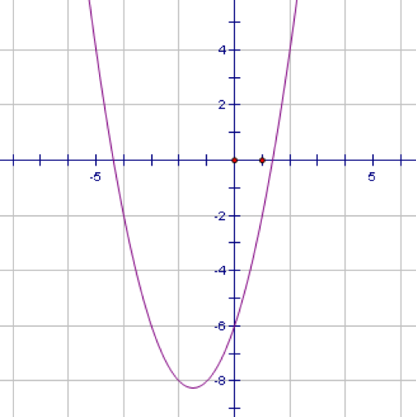
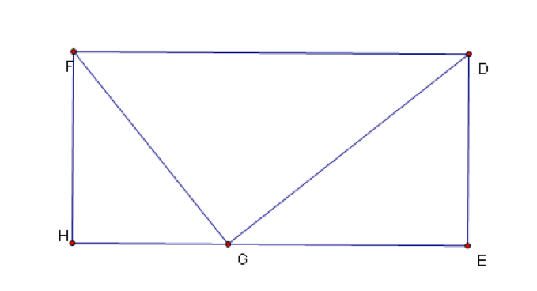

致宋佳佳
这次的信件内容比较长，希望你仔细看一下，如果你在听音乐，请把音乐关了，听音乐做数学题绝对没好处的，谢谢。
本次主要讨论:
1本次期末考试分析
2 数学研究
3 中考复习
先说1，距离上次期末考试过去好几天了，虽然题目忘的差不多了，可当时做的感觉还是有的。我只说说数学吧。考试后校园乱七八糟的，都在讨论刚刚过去的数学考试。不过我对此只字未提，保有我自己的原看法。
（很荣幸告诉你）。我很想不到考试题竟以抛物线为重点，其中选择题的最后一道，大题倒数4，1都是一个类型的，不知你做的怎样。如果如你平常所说，这类题都抄抄，听讲不认真，考试一紧张（还好时间充裕），极有可能在这三道题全军覆没。现在，我给你冷静的分析一下，首先，它们都是实际问题抽象化，跳大绳绳到最高点时是抛物线，竖直向上抛物体（或人） 高度与时间的关系是抛物线。
然后建立恰当的坐标系，根据已知点在抛物线上求出抛物线的解析式，这样一般大题的第一问就可以解决。（比较经典的一道题是课本69页第四题）第二问必须利用第一问求出的二次函数解析式，联系实际，一般不难。如果有第三问，一般就是综合题了，具体可综合的内容太多。如果你还有印象的话，我记得考试时最后一题的最后一问就是如此，问运动员要向前跑多少米才能接住下落的足球？我算的好像是13米。其实这问也就是（1）（2）的综合，需要再次求出球第二次弹起高度与时间的关系式，再计算。
这次考试我破天荒的把学校发的草稿纸写完了，而且我似乎是用了1个多小时完成试卷（忘带表），这无不说明这次考试计算量偏大，我们大部分时间都在拼命用四则运算，包括检查也主要是再算一遍。
平时我也用惯了calculator考试果然吃大亏了。不知你带它没有去考场。其实做函数题只要不看错、算错，就是合格的"解手"。
这次考试对反比例函数的考查也是仅次于二次函数的，倒数2，3两大题都是的。不过倒数第二题最后一问我愣是没看懂，干嘛非得弄个t=m-n呢，其实求最短距离也蛮简单的，只要方阵是正方形就可以了。倒数第三题和相似、四边形的知识结合起来了，幸好有第一问的铺垫我第二问才勉强告破。我们老师说过一句很经典的话："大题里的前几问看似简单，本质是为最后一问做铺垫的。"平常考试只要按部就班地求解，应该没问题。我给老师再补充一句："竞赛题的难度，就是把做铺垫的前几问抹掉，直接解最后一问而已。"
填空题最后一题也很难，如果平时没见过真正在考场上解出来有一定难度。它讲的是一次函数与正方形问题，找规律求B~n~坐标，不知你做的如何。这题恰好是我参考书（直击中考，你们买了吗）24页第六题。不过到了场我早忘了答案了，又重算了一遍。大体思路是这样的。可以求出直线与x轴夹角是45°，得出正方形的边长是以2倍递增。也就是第一个正方形边长是1，第二个是2，三4，......第n个正方形是2的（n-1）次方，就是B~n~的纵坐标，横坐标就是
1+2+4+2^n-1^=2^n^-1（这里要巧算一下）。这可算是整张试卷最难的一题。
其他的题目考查平平，比如修电灯高度合适不合适，求概率的，其他的我忘了。
还要说的就是选择题第一道，确实有点绕。搞出个凤凰方程来，实质是a+b+c=0，它还只有一个根，就是b^2^-4ac=0，两个方程一结合a=c。
其他的题目如果你还有印象或者困惑很大可以问问我，可惜学校不发试卷，无法"对症下药"喽。
还有一个问题就是考试中重题的概率很高，平常的题海也要认真对待，不要放过每一道不会的题，说不定就考那题。
其次是2，初二时我搞数学研究差点走火入魔，一个晚上都在电脑屋里打字，如同现在我在打字一样。我觉得勾股定理的证明很有趣，现在放假你可以查一下8上的数学课本，就给出了很多证法。最好再了解一下勾股定理的实质（这里我不说，你可以百度百科一下），还有相似可拓展的东西也非常多。初二时写过一篇博文叫《梯形的孪生兄弟》，当时是为鸿峥报投的稿，主要介绍相似的拓展，自以为是初二一年的巅峰之作。（有点自我炫耀额。）其它的文章（空间里的）也不错，有时间你可以看一下。初三还有一章圆，这可以说是全新的知识了，要利用寒假预习一下啊。对于自娱自乐的研究方式，主要目的是扩大知识面，对于考试的拓展题不会手足无措。（比如四边形的准内点，勾股四边形等）
别忘了看一下自我推荐的文章，空间里math一栏。谢谢！
3又到了不得不面对的沉重话题了。不谈空话，引入一道题目：
如图所示的抛物线y=ax^2^+bx+c，下列代数式值为正数的有几个？
① abc ② b^2^-4ac ③ （a+b）^2^-c^2^ ④ （a+c）^2^-b^2^

这道题虽然是我自己编造的，但确是你绝不会陌生的，现在对此类题的总结如下：
对于a的符号，看开口；对于b的符号，看抛物线，紧抓ab符号"左同右异"；对于c的符号，看交点（0，c）。
对于△，看与x轴交点个数。
对于特殊形式如a+b+c，看x=1时y值。
能考查的不外乎这些。
有了这些依据，上一题还是比较难的，关键是③④符号判断，③其实只是a+b+c＜0的变式，得a+b＞-c＞0，于是两边可以平方即可。（正）
④要用平方差公式，得（a+b+c）（a-b+c），a+b+c是x=1时y值，a-b+c是x=-1时y轴，两负一乘积为正。（正）
答案：3个。
最近还做了一道比较精彩的题目，写给你：
如图是矩形DEHF，G是EH上一动点，设FD=a,FH=b.若让图中三个三角形两两相似，问ab之间的关系应该是？A a＞b，B a≥3/2b
C a＞2b， D a≥2b（单选）

解答：设HG=x，EG=a-x
当角FGD=90°时，三个三角形两两相似，此时FH/EG=HG/DE
所以b/（a-x）=x/b
所以b^2^=ax-x^2^ → x^2^-ax+b^2^=0
若存在角FGD=90°的情况，此方程必定有实数根。所以△≥0
即a^2^-4b^2^≥0，因为a、b都是正数，所以a≥2b
答案：D
评价：很好的相似与一元二次方程的综合题。
最后：推荐一首很好听的歌曲，《仙剑问情》，可以baidu一下。
祝你有个愉快的 winter holiday 。